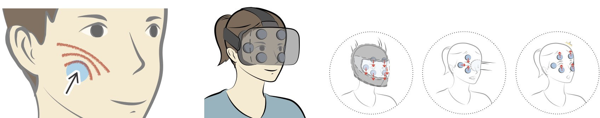

Masque
Exploring Lateral Skin Stretch Feedback on the Face with Head-Mounted Displays.
How I participated:
原型的設計及製作、論文撰寫。Designing the mechanical structure of the prototype, conducting user studies and data analysis, paper writing.
Timeline: 6 months
Skin stretch has been found effective to induce the perception of force (e.g. weight or inertia) and to enable directional haptic cues. However, its potential as an HMD output for virtual reality (VR) remains to be exploited. This paper propose integrating an array of skin stretch modules with an head-mounted display (HMD) to provide two-dimensional skin stretch feedback on the user’s face.
Skin stretch can provide haptic feedback in different level and different kind of notification in just single stretch. Masque is a prototype HMD integrating with six skin stretch modules. Six shear tactors are placed on the facial interface and can generate2-degree-of-freedom lateral skin stretches, which enables various skin stretch feedback or directional cues in virtual reality.

In order to perform 2 degree of freedom movement, we need 2 gear motors to actuate X and Y direction respectively. The shear tactor for dragging skin is a concave plate with 30mm in diameter, and is covered with 3mm-thick silicon pad to ensure the comfort of users. Also, we used 3D printing to build the housing for motors and the base to perfectly fit HMD.
Two user study results indicated that multiple levels of stretch feedback can be created by Masque, and that participants could at least differentiate eight skin stretch directions on their face.
We conducted studies regarding discrimination threshold for stretching distance and angle. The distance study results suggest that the change in stretch distances must be at least 24.6% higher or lower than the current stretch distance to enable people to perceive a difference.
Another study results regarding discrimination threshold for stretching angle indicated the average discrimination threshold of stretch angles across all conditions is 22.69 degrees, and the highest JND value is 42 degree.
We implemented three applications: Motocycle Racing, Snowball Fight, and Virtual Museum Guidance. A set of profiles were created based on our previous study results.

To ensure that the skin stretch feedback generated by Masque is a valuable haptic addition to HMDs, we conducted a user evaluation study for the applications. This study is designed to measure the user’s subjective feedback on Masque in comparison to use without haptic feedback. The results indicate that most of the participants regarded that the lateral skin stretches generated by Masque are valuable for enhancing the enjoyment and realism of their experience in VR.